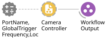

Multi-Camera Controller#
A Harp CameraController (Gen2) device is utilised together with a CameraController (Aeon.Video) node to configure and synchronously trigger two sets of cameras which can operate at different framerates.
Nodes#
CameraController#
The CameraController (Aeon.Video) node establishes a connection to the Harp CameraController (Gen2) device, which will generate two timestamped camera trigger event streams to synchronously trigger two sets of one or many cameras.
This enables direct control to start and stop connected cameras, and configuration of the frequency of the camera triggers.
Properties#
General#
Property name |
Description |
|---|---|
PortName |
The COM port the physical CameraController is connected to |
Camera trigger configuration#
Property name |
Description |
|---|---|
GlobalTriggerFrequency |
Set the frequency of the first (global) set of camera frame triggers |
LocalTriggerFrequency |
Set the frequency of the second (local) set of camera frame triggers |
Subjects#
Events and commands from the device are collected, in some cases processed, and passed to published Subjects.
Here you set the names used for these Subjects to identify these events, commands or data streams for this specific device.
Each of these Subjects is published and becomes accessible in the Bonsai editor’s toolbox anywhere in the workflow using its name.
Device event subjects#
Subject name |
Type |
Description |
|---|---|---|
VideoEvents |
|
A stream of all events emitted by the Harp CameraController (Gen2). Also directly output by the node |
Other output subjects#
Subject name |
Type |
Description |
|---|---|---|
GlobalTrigger |
|
A stream of timestamped camera trigger events generated at the |
LocalTrigger |
|
A stream of timestamped camera trigger events generated at the |
GlobalTriggerFrequency |
|
|
LocalTriggerFrequency |
|
|
Device command subjects#
Subject name |
Type |
Description |
|---|---|---|
StartCameras |
|
Any item sent to this |
StopCameras |
|
Any item sent to this |
Usage#
Create a GroupWorkflow and give it an appropriate name, e.g. “VideoController”.
Inside, place a CameraController (Aeon.Video) node, externalise all properties, and connect it to the WorkflowOutput.

GUI#
None
Logging#
All events can be logged using a LogHarpState (Aeon.Acquisition) node.
The example below logs the state of all relevant Harp registers in a dedicated folder.
Logs can be identified by their register address, summarised here.
Data schema
Register name |
Access |
Address |
Type |
Mask Type |
Description |
|---|---|---|---|---|---|
TimestampSeconds |
Event |
8 |
U32 |
- |
Heartbeat |
Cam0Event |
Event |
32 |
U8 |
CameraEvents |
Signals a frame was triggered on camera 0 |
Cam1Event |
Event |
33 |
U8 |
CameraEvents |
Signals a frame was triggered on camera 1 |
ConfigureCam0Event |
Write |
34 |
U8 |
EventConfiguration |
Configures the event on camera 0 |
ConfigureCam1Event |
Write |
35 |
U8 |
EventConfiguration |
Configures the event on camera 1 |
StartAndStop |
Write |
36 |
U8 |
CameraFlags |
Starts and stops the cameras immediately |
TriggerFrequencyCam0 |
Write |
45 |
U16 |
- |
Specifies the trigger frequency for camera 0 |
TriggerFrequencyCam1 |
Write |
52 |
U16 |
- |
Specifies the trigger frequency for camera 1 |
For the full register and bitmask schema for the CameraControllerGen2 device, see the corresponding device.yml.
State persistence#
Not required for state recovery
Alerts#
In Aeon, the “VideoEvents” Subject is useful as a timer for environment monitoring workflows, such as regular notification of a summary of the current state of the experiment each hour.
See Alerts for details on configuring these alerts.
As with other Harp devices in the system, this stream should be added to the HeartbeatSources to be monitored using the SynchronizerMonitor (Aeon.Acquisition) node to ensure continuous synchronisation with all other synchronised devices on the system.
See also
Camera on how to add a camera controlled by this multi-camera controller.